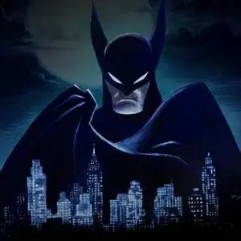

Gotham City: A Cidade do Crime e da Coragem
Gotham City, a cidade fictícia que serve como pano de fundo para as histórias do Batman, é um lugar de contrastes. Conhecida por sua arquitetura gótica e atmosfera sombria, Gotham é um reflexo das complexidades da sociedade urbana. A cidade é marcada por altos índices de criminalidade, corrupção e desigualdade social, tornando-se um terreno fértil para o surgimento de vilões icônicos como o Coringa, o Pinguim e a Mulher-Gato.